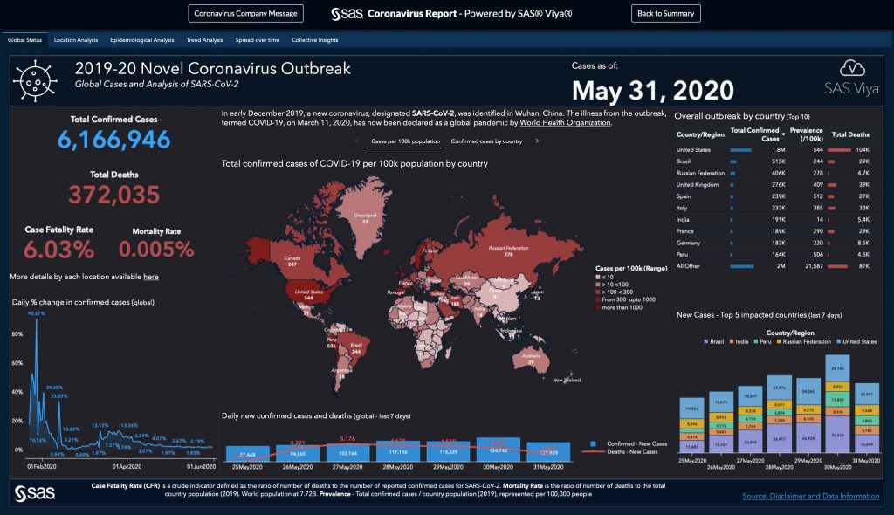

This project involved cleaning secondary data obtained from sources such as the Bank of Zambia (BoZ) and the World Bank using Excel. The refined dataset was then analyzed in E-Views to explore the relationship between currency volatility and Foreign Direct Investment (FDI) in Zambia. Additionally, other variables like inflation rate (measured by GDP deflator) and economic growth (indicated by GDP per capita) were examined to understand their connections with FDI. The findings of the study indicated that currency volatility had a weak negative impact on FDI. In contrast, economic growth demonstrated a significant positive effect on FDI, highlighting its substantial influence. Moreover, the analysis revealed a negative relationship between inflation and FDI, suggesting that higher inflation rates were associated with a decrease in foreign direct investment. In summary, this research contributes valuable insights into FDI dynamics in Zambia. It emphasizes the limited impact of currency volatility, the considerable positive influence of economic growth, and the detrimental effect of inflation on foreign direct investment in the country.
Harnessing secondary data sourced from the Our World in Data website, a thorough exploration of the COVID-19 dataset unfolded in SQL Server. The preliminary stage involved meticulous data cleansing in Excel, tailoring the dataset to specific requirements. Subsequently, an extensive analysis ensued through SQL queries, aiming to unveil nuanced insights into the global landscape of COVID-19. This encompassed a detailed examination of recorded deaths and vaccinations, with a specific focus on different continents and individual countries.
The temporal scope of this investigation spanned from 2020 to 2021, providing a comprehensive understanding of the pandemic's evolution during this critical period. By scrutinizing trends over time, the study aimed to capture the dynamic nature of COVID-19 data, shedding light on its impact across diverse regions and within specific nations such as Zambia. This multifaceted analysis not only delved into the immediate impacts but also sought to discern patterns and variations over the specified timeframe.

The project involved a detailed examination of COVID-19 data from 2020 to 2021, utilizing Tableau for visualization. The dataset, sourced from the Our World in Data website, underwent initial refinement in Excel before being presented visually in Tableau. The primary aim was to analyze global trends in deaths and vaccinations, with the investigation spanning various continents and specific countries, including a focused study on Zambia.
The strategic use of Tableau's advanced visualization tools played a pivotal role in presenting a comprehensive and insightful summary of the dynamic patterns and impacts associated with COVID-19 during this critical timeframe. This approach facilitated a nuanced understanding of the intricate aspects of the pandemic, offering valuable insights into both global and regional dynamics.
In the course of this project, information was sourced from a secondary repository on github.com, and Excel played a pivotal role throughout the project's entirety. The dataset in question pertains to U.S. bike sales, with an emphasis on understanding how factors like age, gender, and distance per customer impact these sales. Excel was utilized for systematic data cleaning, pivot table generation, and ultimately, the development of a detailed dashboard. This comprehensive utilization of Excel facilitated a thorough examination of the diverse elements influencing bike sales, resulting in the creation of an informative dashboard for effective visualization.
This project involved the utilization of housing data specific to Nashville, which was obtained from a repository on GitHub. To facilitate comprehensive analysis, the data was processed and organized using SQL, thereby enhancing its accessibility and usability for further examination and exploration.

This project utilized R programming language to analyze a dataset sourced from Kaggle, aiming to understand the factors affecting health insurance charges. The dataset included variables like age, BMI, number of children, smoking habits, sex, and region. Initial exploratory data analysis involved calculating correlations and creating boxplots to visualize the distribution of charges across categories such as smoking status, sex, and region. Subsequently, a linear regression model was constructed to predict insurance charges based on these variables. The model highlighted that age, BMI, smoking habits, and the number of children significantly influence insurance charges. With an adjusted R-squared value of 0.7494, the model indicates that approximately 75% of the variability in insurance charges can be explained by the selected predictors. This project underscores the significance of lifestyle choices and demographic factors in shaping health insurance costs, providing valuable insights for both insurers and policyholders.